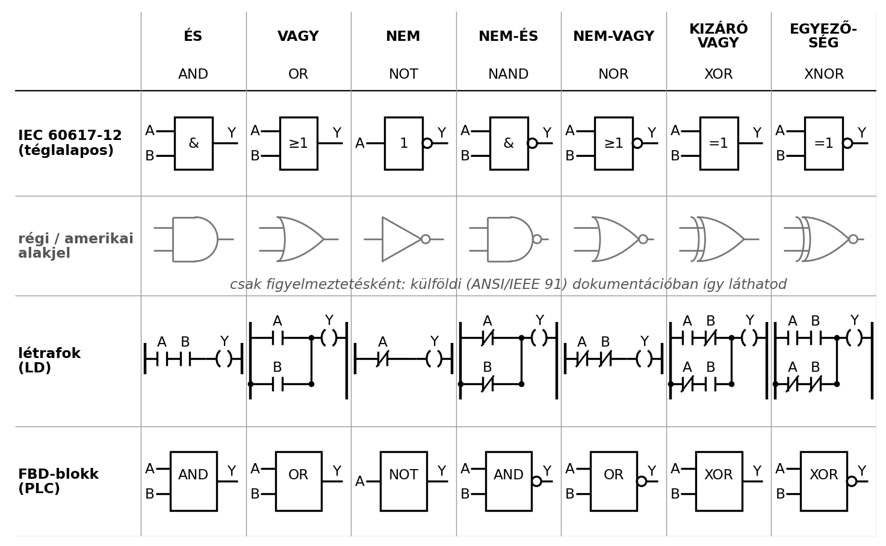
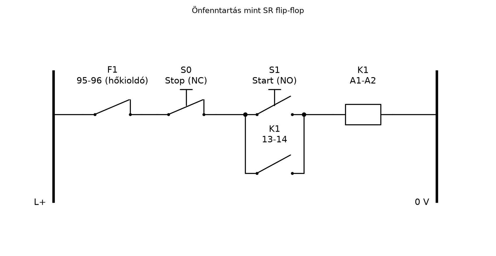

Egyre több gépen és épületautomatikai rendszeren találkozol
PLC-vel (programozható logikai vezérlő),
érintőképernyős HMI-panellel vagy okos relével. Ha
elromlik egy motor, ami „kétkezes indítással” biztosított préshez van
beépítve, a hibát csak akkor tudod megkeresni, ha érted: a vezérlés
valójában egy ÉS kapcsolatot valósít meg a gombok
között. Ha a LED-es kijelzőn 0x3F értéket látsz, és nem
tudod, hogy az a 63-as szám, nem tudod beállítani a paramétereket. A
digitális logika nem elvont informatika: ez a relés kapcsolások és a
modern vezérlések közös nyelve.
Nézzünk egy klasszikus mágneskapcsoló-vezérlést. Tegyük fel, hogy egy szivattyút csak akkor szabad indítani, ha a biztonsági kapcsoló (pl. vészleállító, ami alaphelyzetben enged) zárt ÉS a szintérzékelő is azt jelzi, hogy van elég víz. Ha van feszültség, a tekercs meghúz. Ez a kapcsolás így néz ki:
A tápfeszültséget itt 24 V DC-nek jelöltük, de a logika gondolati váza ugyanaz, akár 230 V-os vezérlést nézünk (jogosult személy által), akár tanműhelyi törpefeszültséget. A lényeg: a nyitott és zárt kontaktusokból matematikai kapcsolat lesz.
A relé csak két állapotot ismer: be van húzva (1) vagy elengedve (0). A PLC-k és a digitális elektronika is ezen a két állapoton alapszik.
Definíció. A kettes (bináris)
számrendszer alapszáma 2, a használt számjegyek: 0
és 1. A helyiértékek jobbról balra
növekednek. Definíció. A tizenhatos
(hexadecimális) számrendszer alapszáma 16, a számjegyek:
0–9, majd A (10), B
(11), C (12), D (13), E (14),
F (15). A hexadecimális rövidítésére gyakran
0x előtagot írnak (pl. 0x3F), vagy alsó
indexbe 16 kerül:
.
Miért pont a hexadecimális? Mert 4 bit (négy bináris
számjegy) pontosan egy hexadecimális számjegyet ad ki. Ez óriási
tömörítés: a 8 bites 11001010 kettes szám hexadecimálisan
csak 0xCA.
Szabály. Átváltás 10-esből 2-esbe (maradékos osztás). Osszuk maradékosan a számot 2-vel, amíg a hányados 0 nem lesz. A maradékokat alulról felfelé kell olvasni!
Szabály. Átváltás 2-esből 16-osba. Csoportosítsd a biteket jobbról 4-esével, és írd át mindegyiket 16-os alakra. (Ha a bal oldalon nem jön ki a 4 bit, pótold 0-val!)
A digitális logikában a kimenet (pl. a motor indítójele) a bemenetek (pl. gombok) kombinációjától függ. A legegyszerűbb kapukat relékkel is meg tudod valósítani.
Definíció. Az igazságtábla olyan táblázat, amely a bemeneti változók minden lehetséges kombinációjához megadja a kimeneti értéket.
ÉS (AND): A kimenet akkor 1-es, ha minden bemenet 1-es. Kapcsolási jele: . Relés megvalósítás: soros kontaktusok.
VAGY (OR): A kimenet akkor 1-es, ha legalább az egyik bemenet 1-es. Kapcsolási jele: . Relés megvalósítás: párhuzamos kontaktusok.
NEM (NOT): A kimenet a bemenet ellentettje. Jele: . Relés megvalósítás: nyugalmi érintkező (NC kontaktus). Amikor a relé nincs meghúzva, a kontaktus zárva van (1), ha meghúz, bont (0).
A táblázat négy sora a két bemenet (A, B) négy kombinációja, az oszlopok a kapuk kimenetei; az utolsó sor a relés megvalósítást adja (NO = záró, NC = bontó érintkező, a soros kapcsolás ÉS, a párhuzamos VAGY). Az ÉS kimenete csak az 1–1 sorban 1, a VAGY-é csak a 0–0 sorban 0, a XOR-é akkor 1, ha a két bemenet különböző. A HTML-kiadásban az A és B bemenetre kattintva minden kapu relés létrafoka átvált: az áramot vivő ág kiemelődik, a lámpa az 1-es kimenetnél világít, és a táblázat aktuális sora kijelölődik.
A kapukat a kapcsolási rajzokon, okosrelék és PLC-k funkcióblokk-nézetében (FBD) nem képlettel, hanem rajzjellel látod. Az alábbi táblázat a hét kapu IEC 60617-12 szerinti téglalapos jelét, a régi (amerikai) alakjelet, a létradiagramos (LD) megfelelőt és a PLC FBD-blokkját állítja egymás mellé:

A téglalapba írt jel a függvényt adja: & = ÉS, ≥1 = VAGY (legalább egy bemenet 1), =1 = KIZÁRÓ VAGY (pontosan egy bemenet 1), 1 = átjátszó, amelyből a kimeneti negáló kör NEM-et csinál. A negáló kör a létrában a bontó (NC) programkontaktusnak felel meg – a NEM-ÉS létrafoka ezért két párhuzamos bontó (), a NEM-VAGY-é két soros bontó (). A szürke alakjeleket a magyar és európai rajzokon nem használjuk; csak azért szerepelnek, hogy egy külföldi dokumentációban felismerd őket. Ellenőrizd a táblázatot: kövesd végig a KIZÁRÓ VAGY létrafokát az A = 1, B = 1 bemenetre – miért nem húz meg Y?
A Boole-algebra azonosságai a rajzon kézzelfogható jelentéssel bírnak: megmutatják, melyik érintkező felesleges, és hibakeresésnél azt, melyik hiba milyen tünetet okozhat.
| Azonosság | Relés olvasat |
|---|---|
| áthidalt (mindig zárt) érintkező a sorban: nincs hatása | |
| szakadt érintkező a sorban: az ág sosem vezet | |
| áthidaló párhuzamos ág: a feltétel kiiktatva – védelemnél tilos | |
| a B-t tartalmazó párhuzamos ág felesleges | |
| ugyanannak a relének záró és bontó érintkezője sorban: sosem vezet | |
| záró és bontó párhuzamosan: mindig vezet (az átkapcsolás pillanatától eltekintve) |
Törvény (De Morgan). és .
Relés olvasat: két STOP nyomógomb (S0, S01) sorba kötött bontó érintkezője , vagyis „ha S0 vagy S01 meg van nyomva, a kör bont”.
Figyelem. Biztonsági láncban (vészleállító, védőajtó-kapcsoló) az egyszerűsítés nem cél: a két csatorna redundanciája szándékos, a „felesleges” érintkező az egyik hiba esetére tartalék. Ilyen érintkezőt elhagyni vagy áthidalni tilos (lásd a vészleállítóról szóló tipikus hibát). Gyakorlás: a 9. feladat.
A PLC-programozásban ezt a nyelvet létradiagramnak (Ladder Diagram, LD) hívják. A PLC bemenetei ugyanúgy kontaktusokként jelennek meg, a kimenetei pedig tekercsként.
Relé logika:
A és B kontaktus sorosan
= ÉSA és B kontaktus
párhuzamosan = VAGYA kontaktus bontó (NC) = NEMPLC logika (LD): Ugyanezt a grafikus programban rajzolod meg, a PLC processzora a programot ciklikusan hajtja végre (bemenetek beolvasása → logika kiértékelése → kimenetek írása), a kimeneteket relé- vagy tranzisztoros kimeneti fokozat kapcsolja.

Ebben a rajzban az A és B sorosan van,
tehát A ÉS B, de ezzel párhuzamosan van a C,
tehát a teljes függvény:
.
Számítás. Logikai függvény értelmezése. Adott a kapcsolási rajz: és soros, ezzel párhuzamosan , az egész elé kötve (azaz sorosan D is van). Mennyi a kimenet ha ? 1. lépés: . 2. lépés: . 3. lépés: . A motor jár. ∎
Eddig olyan áramköröket néztünk, ahol a kimenet csak a pillanatnyi bemenettől függ. Ezt hívják kombinációs logikának. A gyakorlatban szükség van arra, hogy egy rendszer „emlékezzen” egy állapotra. Ez a sorrendi logika.
A leggyakoribb memóriaelem két stabil állapottal rendelkezik. A relés vezérlésben ezt hívják önfenntartásnak.
Szabály. 1. , (behúz). 2. , az előzőben marad (tartás!). 3. , (elenged). 4. , : az elméleti (kapukból épített) SR tárolónál tiltott állapot. A relés önfenntartásban viszont a sorosan előre kötött STOP (S0) bontó miatt a törlés biztosan érvényesül (törlés-domináns tároló) – a biztonságos vezérlést mindig így kell kialakítani; a PLC-ben ennek az RS (reset-domináns) blokk felel meg (ellenőrizendő: a PLC-gyártó blokkdefiníciója).
Valósítsuk meg relés önfenntartással:

Az időzítő (Timer) olyan logikai elem, amely az indítás után egy beállított késleltetéssel állítja csak a kimenetét. (Például a csillag-delta indításnál az átkapcsolás 5 másodperc után történik ezzel.) A számláló (Counter) pedig impulzusokat számol, és a beállított érték elérése után ad ki logikai jelet (pl. minden 10. becsomagolt doboz után).
A PLC-k (IEC 61131-3) három alap-időzítőt és a számlálót ismerik; a működésüket idődiagramon lehet a legjobban megérteni. Az alábbi ábrán az IN bemenet két impulzust kap (egy 8 s-osat és egy 3 s-osat), a késleltetés PT = 5 s; alul egy felfelé számláló (CTU) CU-bemenete, törlőjele (R), számlálóértéke (CV) és kimenete (Q) látható, PV = 3 beállítással.
Olvasd le az ábráról: a TON (bekapcsolás-késleltetés) kimenete csak akkor lesz 1, ha a bemenet legalább PT ideig folyamatosan 1 – a 3 s-os impulzus ezért nem kapcsolja. A TOF (kikapcsolás-késleltetés) azonnal bekapcsol, és a bemenet megszűnése után még PT ideig tart. A TP (impulzus) minden felfutó élre pontosan PT hosszú impulzust ad, a bemenet hosszától függetlenül. A CTU minden CU-impulzusra eggyel növeli a CV értékét; a kimenete akkor 1, ha CV ≥ PV, és az R törlőjel nullázza. A HTML-kiadásban a PT csúszkával állítható, és élőben látszik, mikor „nyeli el” a TON a rövid impulzust, illetve mikor olvad össze a TOF két szakasza.
A PLC-funkciók relés megfelelői a kapcsolószekrényben is megtalálhatók:
| PLC-funkció (IEC 61131-3) | Időrelé-megfelelő | Tipikus alkalmazás |
|---|---|---|
| TON – bekapcsolás-késleltetés | meghúzáskésleltetett időrelé | csillag–delta átkapcsolás 5 s után – Csillag–delta indítás vezérlése |
| TOF – kikapcsolás-késleltetés | elengedéskésleltetett időrelé | szalag kiürítése a leállítás után – Kétsebességű, sorrendi és késleltetett vezérlések; ventilátor-utánfutás |
| TP – impulzus | impulzusadó (egyszeri impulzus) időrelé | lépcsőházi automata – Lépcsőházi automata, impulzusrelé és időrelé alapkapcsolása |
| CTU – felfelé számláló | számlálórelé (előválasztó számláló) | csomagszámlálás: minden 10. doboz után jelzés |
Az időrelék érintkezőinek jelölése gyártófüggő (gyakori a 15–16–18 és a 25–26–28 váltóérintkező-számozás) (ellenőrizendő: a készülék adatlapja); a rajzon a késleltetett érintkezőt a működtetővonalon lévő félkör (ejtőernyő) jelzi. A relés kapcsolások létradiagramos fordítását a TON/TOF időzítőkkel, valamint ugyanazt a feladatot FBD-ben és strukturált szövegben a PLC-alapok és ipari vezérlés alfejezet mutatja.
Egy mechanikus présgépnél a balesetek elkerülésére kétkezes vezérlést írnak elő (kétkezes vezérlőeszköz: MSZ EN ISO 13851, ellenőrizendő). A gép csak akkor indul, ha a bal ÉS a jobb gombot egyszerre, legfeljebb 0,5 másodperc különbséggel nyomja meg a kezelő. Ha az egyik gomb megragad zárva, a gép nem indul el újra, amíg mindkettőt el nem engedik.
A szerelőnek nem elég tudnia, hogy „a relé tekercse meghúz”, hanem a
kapcsolást mint logikai rendszert kell látnia:
– ez azonban csak az ÉS-kapcsolat; a kétkezes vezérlés ennél több: a 0,5
s-os egyidejűségi időablak és az „újraindítás csak mindkét gomb
elengedése után” feltétel sorrendi (időzítős, memóriás) logikát kíván.
Ezt minősített kétkezes biztonsági modul valósítja meg, nem két soros
nyomógomb. Ha a hibakeresés során (jogosult személy, mérés előtti
műszerellenőrzéssel) azt méri, hogy az egyik gomb kimenetén hiányzik a
vezérlőfeszültség, akkor a logikai ÉS egyik bemenete 0,
tehát a kimenet is 0. A relé nem húzhat meg.
Hiba. Egy szerelő átkötötte a hibás bal oldali gombot, hogy „kipróbálja a sajtót”. A logikai függvénye így lett. A gép egy kézzel is indult. Ez súlyos balesetveszély! Védelmi áramköröket tilos átkötni!
A bontó/záró érintkezők összekeverése a PLC-ben. A relés kapcsolásban a vészstop gomb fizikailag NC (bontó) kontaktus, sorba kötve a tekerccsel. A vészleállító NC érintkezője huzalozottan (biztonsági relén vagy biztonsági PLC-n át) bontja a mágneskapcsoló tekercskörét; a szabványos PLC csak a nyugtázó jelet kapja. A vészleállítás nem függhet a szabványos PLC programjától. A programban a bontó (NC) terepi érintkező bemenetét ZÁRÓ programkontaktussal (‑| |‑) kell kiértékelni: a bit alaphelyzetben 1, a rung vezet; a gomb megnyomása vagy vezetékszakadás a bitet 0-ra viszi, és a rung bont. Ha a programba bontó kontaktust (‑|/|‑) rajzolnak, a logika megfordul – ez a tipikus hiba. A vészleállítás ettől függetlenül huzalozottan történik, ezért a programbeli hiba itt a jelzést, nem a leállítást rontja el (ellenőrizendő: MSZ EN 60204-1, MSZ EN ISO 13850).
A hexadecimális A–F értékek elfelejtése. Az
ember ösztönösen úgy gondolja, hogy A = 1, mint az
osztályzatoknál. Valójában A = 10. Ez gyakori hiba a
frekvenciaváltók vagy PLC-k paramétereinek beállításakor (pl. a
0x1F nem 19, hanem 31).
Az önfenntartó kontaktus elhagyása. Ha a start gomb impulzusszerű (nyomógomb), az SR flip-flop „memóriája” nélkül a motor csak addig jár, amíg a gombot nyomva tartod. A szivattyú leáll, amint elengeded a gombot. Mindig ellenőrizni kell a tartókontaktust.
Gyakorlás: ennek az alfejezetnek a kidolgozott példái, gyakorlatai és megoldással ellátott feladatai az Összefoglaló feladatgyűjtemény villanyszerelő tanulóknak című kötet 38.3 szakaszában találhatók.
A kettes számrendszer a kapcsolók nyelvét jelenti: a be van húzva (1) és elengedve (0) állapotok matematikáját. A 16-os számrendszer ennek a tömör rövidítése (4 bit = 1 hexa jegy). A logikai kapuk között az ÉS-t soros, a VAGY-ot párhuzamos kontaktusokkal tudod megépíteni, míg a NEM-et alaphelyzetben zárt (NC) kontaktussal. Ez az egyszerű megfeleltetés köti össze a hagyományos relés kapcsolásokat a modern PLC-k létradiagramjával. Az SR flip-flop a relés önfenntartás megfelelője: ez az egyszerű memória biztosítja, hogy a startgomb impulzusa után is menjen a gép. Az időzítők és számlálók ezt a memóriát egészítik ki késleltetésekkel és eseményszámolással. Visszautalás: a PLC-alapok és ipari vezérlés alfejezet létradiagramjai itt kaptak logikai (Boole-algebrai) magyarázatot; a következő alfejezet a szerelői kézügyességgel folytatódik. A védelmi áramkörökben a logikai függvényt tilos módosítani (pl. átkötéssel), mert ezzel a biztonsági kapcsolatok (ÉS feltételek) meghiúsulnak.